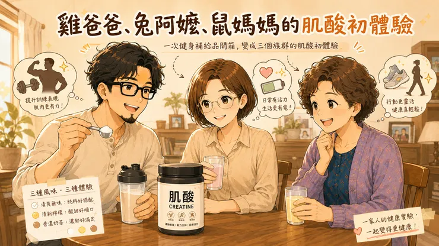

今天晚上，我訂的肌酸到貨了。
正在健身的雞爸爸，肌酸是肌肉生長的最佳補充品。
網路上看了很多影片和資料，發現肌酸不但能提升訓練表現、增加肌力、幫助恢復，幾乎是零負評，隨著增肌的新手紅利期結束，是應該加入肌酸俱樂部了。
肌酸不只是為了雞爸爸
以前總覺得長輩保健是補鈣、補魚油，但近年不少研究開始關注肌酸對高齡者肌肉維持，甚至認知功能的潛在幫助，所以我也邀請兔阿嬤一起參加。
大腦本來就是耗電怪獸，就如同資料中心不能沒有電一樣，肌酸本來就是人體能量系統的快充電池，但人一天自己只會生產1.7克左右的肌酸，即便沒有在健身，也是遠遠不足的。
也有相關抗憂鬱、熬夜的研究
跟很多女生聽到肌酸的反應一樣，鼠媽媽問：
「那不是健身猛男在吃的嗎？」
其實女性體內的肌酸儲存量普遍比男性少，近年的研究也發現，女性在運動表現、肌肉維持甚至日常體能上，甚至在降低憂鬱和熬夜都有幫助，一天建議可以補充3-5克以上的肌酸。
三種口味的幸福實驗
雞爸爸想著是倒三角身材和腹肌，
兔阿嬤關心的是能不能健步如飛。
鼠媽媽則希望忙碌生活裡還保有充足體力。
一次健身補給品開箱，變成三個族群的肌酸初體驗。
有些補充品是買給自己的，有些補充品收到後，想到的是家人。這罐肌酸，無疑是屬於後者。